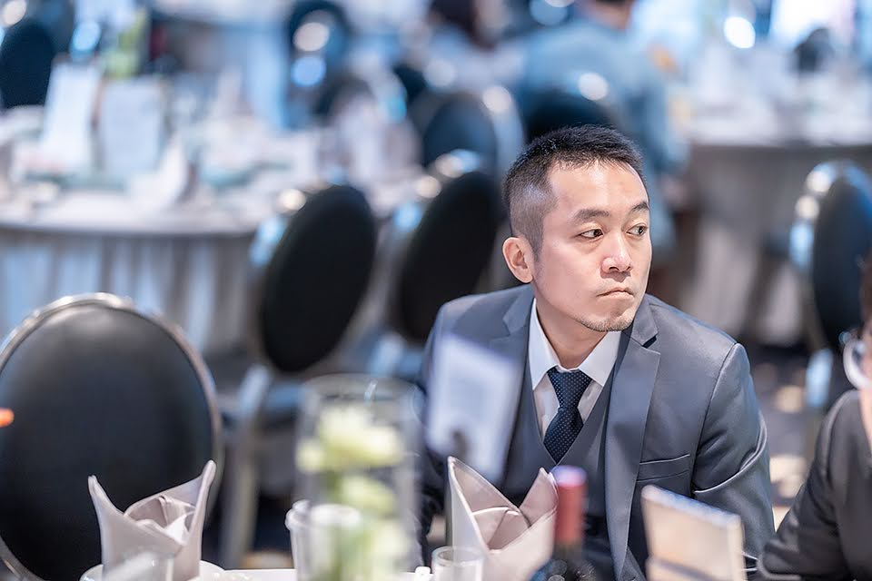

【娛樂焦點新聞】 二十年漫長歲月，換來一句「我們在一起吧」。一段跨越時光與婚姻羈絆的愛情故事，終於在今晨畫下完美句點──黃曉慧，在苦等黃晨瑋離婚多年後，終於在他恢復單身的那一天，鼓起勇氣追愛，兩人正式公開戀情！
這段「守候系戀情」早在二十年前就埋下伏筆。據知情人士透露，當年黃曉慧對黃晨瑋一見鍾情，但礙於對方已有對象，她選擇默默退出，隱身幕後，只以朋友之名關心著他的生活點滴。多年來，無論對方婚姻起伏、人生轉折，她始終沒有放棄心中那份執念。

直到去年夏天，黃晨瑋正式結束婚姻，回歸單身生活，黃曉慧終於鼓起勇氣傳出那封訊息：「如果現在可以，我想重新站在你身邊。」據悉，黃晨瑋在看到訊息當下「眼眶泛紅」，兩人約出來見面後，一切彷彿回到初識那年，「只是這次，沒有阻礙了」。
💬 網友熱議：
- 「這根本是偶像劇情節吧！」
- 「等二十年太扯，這是真愛認證！」
- 「黃曉慧根本2025版的林志玲+程又青！」
- 「能等這麼久，她一定超愛超愛他的吧！」
目前兩人已低調交往數週，並計畫下半年一起出國旅行，好好彌補這二十年的空白。